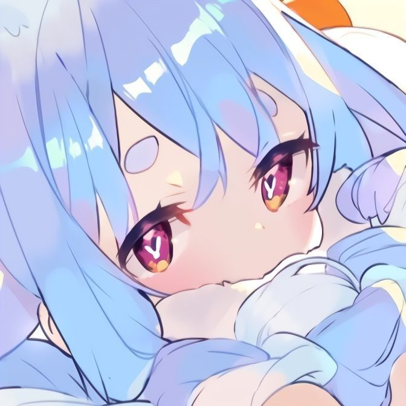

Minhas redes sociais
Quem sou eu?
Meu nome é João Vitor, tenho 20 anos e estou cursando Ciências da Computação.
Como falar comigo?
 /jooj_viiv - Me segue lá no Instagram.
/jooj_viiv - Me segue lá no Instagram. /kemacmac - Me segue lá no Twitter.
/kemacmac - Me segue lá no Twitter. @kakemac8904 - Se inscreve la no meu Canal.
@kakemac8904 - Se inscreve la no meu Canal.